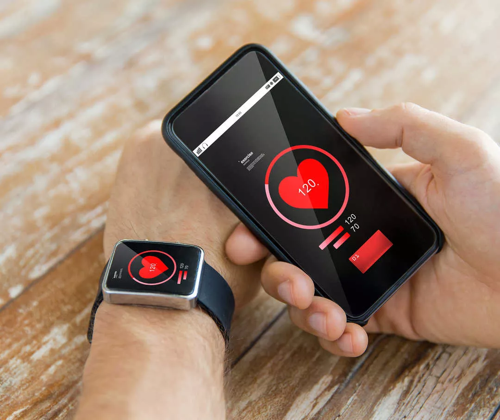

A good strategy for discovering potential misuse risks is to break a device into its core functions or features. Then ask whether each function could be used beyond its original design intention.
So, let's break down HMDs.
Which key functions of an HMD could lead to misuse? Which seem less central? Drag each feature to the left or right.
Think back to the two important HMD features you identified.
Case: Mandatory use imposed by employers or schools
An employee's compensation could be threatened if an employer-provided wearable tracks her movements and productivity.
A supervisor, or even the company as a whole, could use data from a worker's GPS tracker to claim that the employee is not meeting job requirements, potentially leading to termination or demotion. Companies could also use wearable data to silence or pressure potential whistleblowers.
Wearable technology can enhance productivity, improve workplace safety, and monitor health or performance. But it also raises serious concerns about privacy, data accuracy, and potential bias.
The coercive use and abuse of health data tracking turns self-health management into surveillance and data dependence. Users need to critically evaluate health-related decisions based on data so they are not controlled by it. Institutional requirements for mandatory tracking must also be clearly defined and strictly constrained through legal and compliance frameworks.
Now let's return to the other key feature: collected data is visible to users at any time.
Case: User overreliance on wearable devices
A 2024 study published in Sleep Medicine found that individuals who used sleep-tracking devices reported higher sleep-related anxiety and worse subjective sleep quality, even though objective measurements showed improvements in sleep duration.
Many wearables rely on alarming notifications, red warning signals, and urgent alerts for readings that may reflect normal physiological variation. Without enough context, users may be forced to interpret complex health data without medical training.
Negative impact: increased anxiety and other mental-health strain.
Avoid excessive dependence on wearable devices. This is a form of psychological technological misuse. Users should understand the limitations of the technology.
The wearable industry is beginning to address the psychological challenges of health-monitoring devices. Better context, fewer false alarms, and mental well-being should be part of future design.